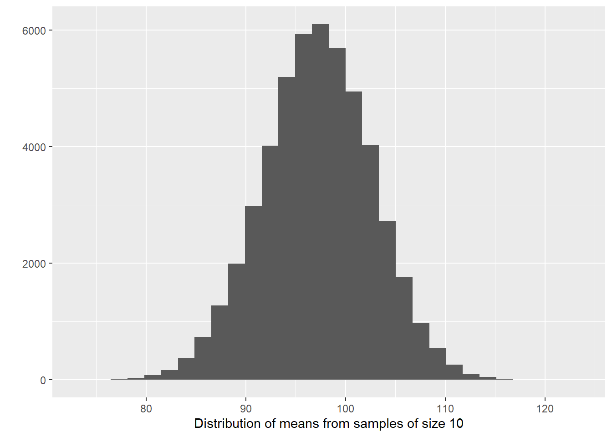
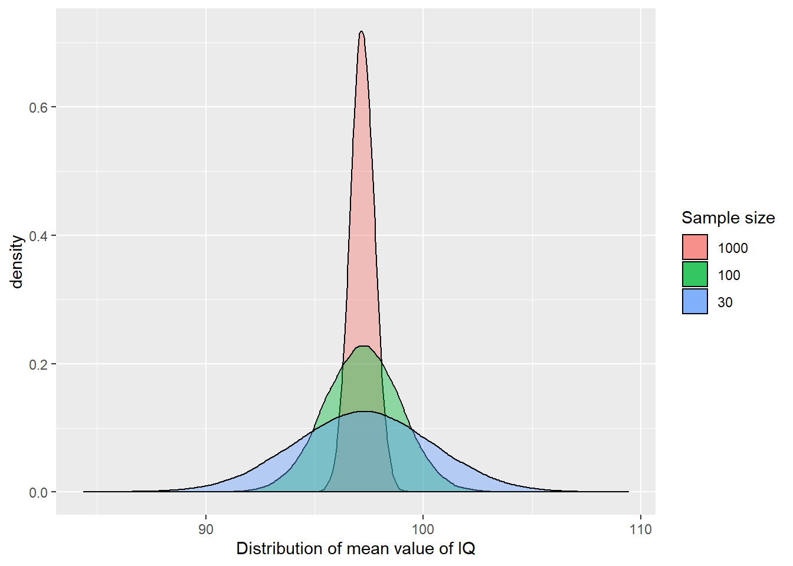
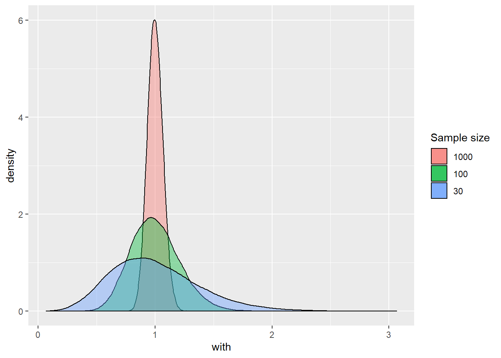
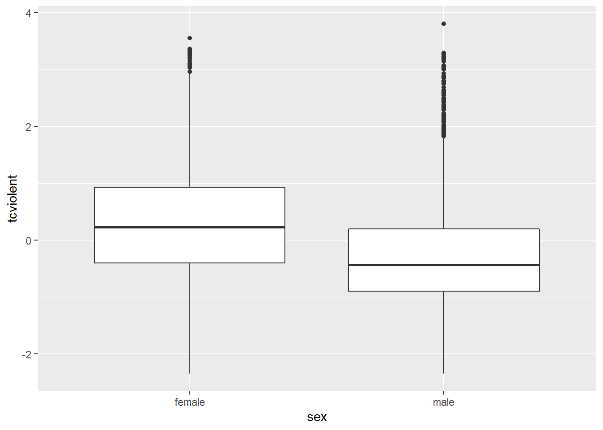
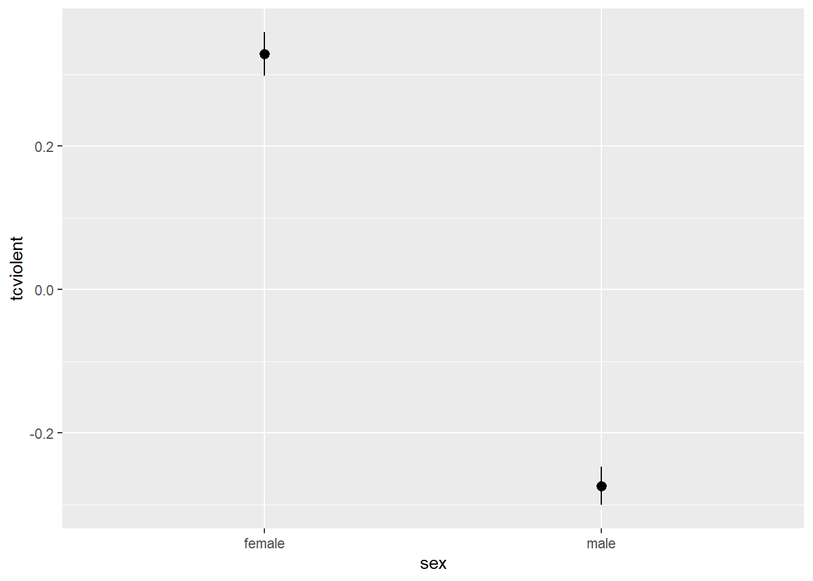

Chapter 5 Foundations of statistical inference: confidence intervals
5.1 Introduction
Up to now we have introduced a series of concepts and tools that are helpful to describe sample data. But in data analysis we often do not observe full populations. We often only have sample data.
Think of the following two problems:
You want to know the extent of intimate partner violence in a given country. You could look at police data. But not every instance of intimate partner violence gets reported to, or recorded by, the police. We know there is a large proportion of those instances that are not reflected in police statistics. You could do a survey. But it would not be practical to ask everybody in the country about this. So you select a sample and try to develop an estimate of what the extent of this problem is in the population based on what you observe in the sample. But, how can you be sure your sample guess, your estimate, is any good? Would you get a different estimate if you select a different sample?
You conduct a study to evaluate the impact of a particular crime prevention program. You select a a number of areas as part of the study. Half of it you randomly allocate to your intervention and the other half to your control or comparison group. Imagine that you observe these areas after the intervention is implemented and you notice there is a difference. There is less crime in your intervention areas. How can you reach conclusions about the effectiveness of the intervention based on observations of differences on crime in these areas? What would have happened if your randomisation would have split your sample in different ways, would you still be able to observe an effect?
For this and similar problems we need to apply statistical inference: a set of tools that allows us to draw inferences from sample data. In this session we will cover a set of important concepts that constitute the basis for statistical inference. In particular, we will approach this topic from the frequentist tradition.
It is important you understand this is not the only way of doing data analysis. There is an alternative approach, bayesian statistics, which is very important and increasingly popular. Unfortunately, we do not have the time this semester to also cover Bayesian statistics. Typically, you would learn about this approach in more advanced courses.
Unlike in previous and future sessions, the focus today will be less applied and a bit more theoretical. However, it is important you pay attention since understanding the foundations of statistical inference is essential for a proper understanding of everything else we will discuss in this course. The code we cover in the first few sections this week is much trickier but won’t be instrumental for your assignment, so don’t worry too much if you don’t fully understand it.
5.2 Generating random data
For the purpose of today’s session we are going to generate some fictitious data. We use real data in all other sessions but it is convenient for this session to have some randomly generated fake data (actually technically speaking pseudo-random data)6.
So that all of us gets the same results (otherwise there would be random differences!), we need to use the set.seed() function. Basically your numbers are pseudo random because they’re calculated by a number generating algorithm, and setting the seed gives it a number to “grow”" these pseudo random numbers out of. If you start with the same seed, you get the same set of random numbers.
So to guarantee that all of us get the same randomly generated numbers, set your seed to 100:
set.seed(100) We are going to generate a large object (100,000 cases) with skewed data. We often work with severely skewed data in criminology. For generating this type of data I am going to use the rnbinom() function for something called negative binomial distributions, which is a discrete probability distribution often use as a model for counts.
skewed <- rnbinom(100000, mu = 1, size = 0.3) The code above creates data that follow a negative binomial distribution, essentially a highly skewed distribution. Don’t worry too much about the other parameters we are using as arguments at this stage, but if curious look at ?rnbinom.
We can also get the mean and standard deviation for this object using mean and sd respectively:
mean(skewed)## [1] 1.00143sd(skewed)## [1] 2.083404And we can also see what it looks like:
library(ggplot2)
qplot(skewed)
We are going to pretend this variable measures numbers of crime perpetrated by an individual in the previous year. Let’s see how many offenders we have in this fake population.
sum(skewed > 0)## [1] 35623We are now going to put this variable in a dataframe and we are also going to create a new categorical variable -identifying whether someone offended over the past year (e.g., anybody with a count of crime higher than 0). Let’s start by creating a new dataframe (“fakepopulation”) with the skewed variable we created rebaptised as crimecount.
fake_population <- data.frame(crimecount = skewed)Then let’s define all values above 0 as “Yes” in a variable identifying offenders and everybody else as “No”. We use the ifelse() function for this.
fake_population$offender <- ifelse(fake_population$crimecount > 0, c("Yes"), c("No"))
#Let's check the results
table(fake_population$offender)##
## No Yes
## 64377 35623We are now going to generate a normally distributed variable (watch this short video if you are unclear what a normal distribution is).
We are going to pretend that this variable measures IQ. We are going to assume that this variable has a mean of 100 in the non-criminal population (pretending there is such a thing) with a standard deviation of 15 and a mean of 92 with a standard deviation of 20 in the criminal population. I am pretty much making up these figures.
The first expression is asking R to generate random values from a normal distribution with mean 100 and standard deviation for every of the 64394 “non-offenders” in our fake population data frame. WARNING: If you run the table() function and the number of non-offenders you get is different, you will need to amend the code below accordingly (this will happen if you did not use the seed or generated the original skewed variable more than once).If you get the following message it means you are using the wrong number of people in each category: number of items to replace is not a multiple of replacement lengthnumber of items to replace is not a multiple of replacement length.
fake_population$IQ[fake_population$offender == "No"] <- rnorm(64377, mean = 100, sd = 15)And now we are going to artificially create somehow dumber offenders.
fake_population$IQ[fake_population$offender == "Yes"] <- rnorm(35623, mean = 92, sd = 20)We can now have a look at the data. Let’s plot the density of IQ for each of the two groups and have a look at the summary statistics.
##This will give us the mean IQ for the whole population
mean(fake_population$IQ)## [1] 97.19921#We will load the plyr package to get the means for IQ for each of the two offending groups
library(plyr)
#We will store this mean in a data frame (IQ_means) after getting them with the ddply function
IQ_means <- ddply(fake_population, "offender", summarise, IQ = mean(IQ))
#You can see the mean value of IQ for each of the two groups, unsurprisingly they are as we defined them
IQ_means## offender IQ
## 1 No 99.96347
## 2 Yes 92.20370We are going to create a plot with the density estimation for each of the plots (first two lines of code) and then I will add a vertical line at the point of the means (that we saved) for each of the groups
ggplot(fake_population, aes(x = IQ, colour = offender)) +
geom_density() +
geom_vline(aes(xintercept = IQ, colour = offender), data = IQ_means,
linetype = "dashed", size = 1)
So, now we have our fake population data. In this case, because we generated the data ourselves, we know what the “population”" data looks like and we know what the summary statistics for the various attributes (IQ, crime) of the population are. But in real life we don’t normally have access to full population data. It is not practical or economic. It is for this reason we rely on samples.
5.3 Sampling data and sampling variability
It is fairly straightforward to sample data with R. The following code shows you how to obtain a random sample of size 10 from our population data above:
#We will use the sample function within the mosaic package.
library(mosaic)
sample(fake_population$IQ, 10)## [1] 123.02991 108.10296 94.90335 101.76552 102.96829 100.88919 105.88429
## [8] 107.06557 90.07606 108.01750First of all notice that mosaic masks quite a few functions from various packages. If you want to use them remember to use the package_I_need::for_function_I_want formula we covered in previous sessions.
You may be getting sample elements that are different from mine, depending on the seed you used and how many times before you tried to obtain a random sample. You can compute the mean for a sample generated this way:
mean(sample(fake_population$IQ, 10))## [1] 102.9824And every time you do this, you will be getting a slightly different mean. Try to rerun the code several times. This is one of the problems with sample data. Not two samples are going to be exactly the same and as a result, every time you compute the mean you will be getting a slightly different value. Run the function three or four times and notice the different means you get as the elements that make up your sample vary.
We can also use code to automatise the process. The following code will ask R to draw 15 samples of size 10 and obtain the means for each of them.
do(15) * with(sample(fake_population, 10), mean(IQ))## with
## 1 91.83841
## 2 92.54385
## 3 99.13335
## 4 102.72856
## 5 102.78062
## 6 94.71675
## 7 83.25669
## 8 95.69518
## 9 97.58754
## 10 103.38229
## 11 93.91211
## 12 105.36669
## 13 93.90070
## 14 95.85066
## 15 96.46357So here we have the means that we obtain from 15 different samples from this population. Notice how they vary. We can store the results from an exercise such as this as a variable and plot it:
#The following code will create a dataframe with the results
samp_IQ <- do(15) * with(sample(fake_population, 10), mean(IQ))
#You can see the name of the variable designating the means in the create data frame
names(samp_IQ)## [1] "with"#We are going to create a data frame with the population mean
IQ_mean <- data.frame(mean(fake_population$IQ))
#Have a look inside the object to see what the variable containing the mean is called (and we can then use this name in our plot function)
names(IQ_mean)## [1] "mean.fake_population.IQ."#And we can plot it then
ggplot(samp_IQ, aes(x = with)) +
geom_histogram() +
geom_vline(aes(xintercept = mean.fake_population.IQ.), data = IQ_mean,
linetype = "dashed", size = 1, colour = "red") + #This code will add a red line with the overall mean
labs(x = "Value of the sample means", y = "Number of samples") +
annotate("text", x = 99.8, y = 3, label = "Population mean", colour = "red") + #Annotate is used to insert elements in the graphic, in this case text indicating what the red line means, the x and y indicate the position where the annotation will appear in regards to the x and the y axis (this position may not be optimal depending on the means you get when you run this code)
theme_bw()## `stat_bin()` using `bins = 30`. Pick better value with `binwidth`.
Your exact results may differ from those shown here, but you can surely see the point. We have a problem with using sample means as a guess for population means. Your guesses will vary. How much of a problem is this? This excellent piece and demonstration by New York Times reporters illustrate the problem well. We are going to learn that something called the central limit theorem is of great assistance here.
5.4 Sampling distributions and sampling experiments
We are going to introduce an important new concept here: sampling distribution. A sampling distribution is the probability distribution of a given statistic based on a random sample. It may be considered as the distribution of the statistic for all possible samples from the same population of a given size.
We can have a sense for what the sampling distribution of the means of IQ for samples of size 10 in our example by taking a large number of samples from the population. This is called a sampling experiment. Let’s do that. We will take 50000 samples (rather than 15 as before) of size 10 (that is, with ten elements each) and compute the means. This may take a bit. Wait until you see the object appear in your environment.
sampd_IQ_10 <- do(50000) * with(sample(fake_population, 10), mean(IQ))So now we have 50000 sample means from samples of size 10 taken from our fake population. We are now going to take the mean of this 50000 sample means and then we are going to compare it to the population mean.
mean(sampd_IQ_10$with) #mean of the sample means## [1] 97.17187mean(fake_population$IQ) #mean of the population## [1] 97.19921Wow! They are pretty much the same. What we have observed is part of something called the central limit theorem, a concept from probability theory. One of the first things that the central limit theorem tells us is that the mean of the sampling distribution of the means (also called the expected value) should equal the mean of the population. It won’t be quite the same in this case (to all the decimals) because we only took 50000 samples, but in the very long run (if you take many more samples) they would be the same.
Let’s now visually explore the distribution of the sample means.
#Now we plot the means
qplot(sampd_IQ_10$with, xlab = "Distribution of means from samples of size 10")
Amazing too, isn’t it? When you (1) take many random samples from a normally distributed variable; (2) compute the means for each of these samples; and (3) plot the means of each of these samples, you end up with something that is also normally distributed. The sampling distribution of the means of normally distributed variables in the population is normally distributed. I want you to think for a few seconds as to what this means and then keep reading.
Did you think about it? What this type of distribution for the sample means is telling us is that most of the samples will give us guesses that are clustered around their own mean, as long as the variable is normally distributed in the population (which is something, however, that we may not know). Most of the sample means will cluster around the value of 97.11 (in the long run), which is the population mean in this case. There will be some samples that will give us much larger and much smaller means (look at the right and left tail of the distribution), but most of the samples won’t gives us such extreme values.
So although every sample will give us different values to the mean, in the long run, they will tend to be similar to the mean of the population. If you were to take repeated samples from the same population more often than not, the sample mean will be closer rather than far from the population mean. When you take a sample you have no way of knowing if your sample is one of those that got close to the population mean or far from it. But it is somehow reassuring to know the procedure in the long run tends to get it right more often than not.
Another way of saying this is that the means obtained from random samples behave in a predictable way. When we take just one sample and compute the mean we won’t we able to tell whether the mean for that sample is close to the centre of its sampling distribution (and thus to the population mean). But we will know the probability of getting an extreme value for the mean is lower than the probability of getting a value closer to the mean. That is, if we can assume that the variable in question is normally distributed in the population.
But it gets better. Let’s repeat the exercise with a sample size of 30, 100 and 1000. This code will take some time to run. But compare it with how long it would take you to take 10 pieces of paper from a bag with 100000 pieces of paper 50000 times…
sampd_IQ_30 <- do(50000) * with(sample(fake_population, 30), mean(IQ))
sampd_IQ_100 <- do(50000) * with(sample(fake_population, 100), mean(IQ))
sampd_IQ_1000 <- do(50000) * with(sample(fake_population, 1000), mean(IQ))
#Plot the results, notice how we have changed the aesthetics. We are definig them within each geom because we are using different data stored in different dataframes.
ggplot() +
geom_density(data = sampd_IQ_1000, aes(x = with, fill = "1000"), position = "identity", alpha = 0.4) +
geom_density(data = sampd_IQ_100, aes(x = with, fill = "100"), position = "identity", alpha = 0.4) +
geom_density(data = sampd_IQ_30, aes(x = with, fill = "30"), position = "identity", alpha = 0.4) +
labs(fill = "Sample size") + #This will change the title of the legend
scale_fill_discrete(limits = c("1000", "100", "30")) + #This will ensure the order of the items in the legend is correct
xlab("Distribution of mean value of IQ")
Pay attention to the aesthetics here. Because essentially we are looking at three different datasets, the variables we plot are identified not in an aes statement within the general ggplot() function but rather the aes are included and specified within each of the geoms we are plotting.
But back to the substantive point, can you notice the differences between these sampling distributions? As the sample size increases, more and more of the samples tend to cluster closely around the mean of the sampling distribution. In other words with larger samples the means you get will tend to differ less from the population mean than with smaller samples. You will be more unlikely to get means that are dramatically different from the population mean.
Let’s look closer to the summary statistics using favstats() from the loaded mosaic package:
favstats(~with, data = sampd_IQ_30)## min Q1 median Q3 max mean sd n missing
## 84.36391 95.10328 97.23989 99.36223 109.4893 97.22025 3.159672 50000 0favstats(~with, data = sampd_IQ_100)## min Q1 median Q3 max mean sd n missing
## 90.40428 96.03429 97.21813 98.38842 103.9214 97.20767 1.743929 50000 0favstats(~with, data = sampd_IQ_1000)## min Q1 median Q3 max mean sd n missing
## 94.84451 96.83374 97.20142 97.56903 99.5329 97.19854 0.5469711 50000 0As you can see the mean of the sampling distributions is pretty much the same regardless of sample size, though since we only did 50000 samples there’s still some variability. But notice how the range (the difference between the smaller and larger value) is much larger when we use smaller samples. When I run this code I get one sample of size 30 with a sample mean as low as 83 and another as high as 110. But when I use a sample size of a 1000 the smallest sample mean I get is 95 and the largest sample size I get is 99. When the sample size is smaller the range of possible means is wider and you are more likely to get sample means that are wide off from the expected value.
This variability is also captured by the standard deviation of the sampling distributions, which is smaller the larger the sample size is. The standard deviation of a sampling distribution receives a special name you need to remember: the standard error. In our example, with samples of size 30 the standard error is 3.17, whereas with samples of size 1000 the standard error is 0.55.
We can see that the precision of our guess or estimate (that is the sample mean we use to infer the population mean) improves as we increase the sample size. So we can conclude that using the sample mean as a estimate (we call it a point estimate because it is a single value, a single guess) of the population mean is not a bad thing to do if your sample size is large enough and the variable can be assumed to be normally distributed in the population. As we have illustrated here, more often than not this guess won’t be too far off in those circumstances.
But what about variables that are not normally distributed. What about “crimecount”? We saw this variable was quite skewed. Let’s take numerous samples, compute the mean of “crimecount”, and plot its distribution. Let’s generate the sampling distributions for sample sizes of 30, 100, and 1000 elements. This will take a minute or so depending in how good your machine is.
sampd_CR_30 <- do(50000) * with(sample(fake_population, 30), mean(crimecount))
sampd_CR_100 <- do(50000) * with(sample(fake_population, 100), mean(crimecount))
sampd_CR_1000 <- do(50000) * with(sample(fake_population, 1000), mean(crimecount))And now let’s plot the means from these samples (the sampling distributions).
ggplot() +
geom_density(data=sampd_CR_1000, aes(x = with, fill = "1000"), position = "identity", alpha = 0.4) +
geom_density(data=sampd_CR_100, aes(x = with, fill = "100"), position = "identity", alpha = 0.4) +
geom_density(data=sampd_CR_30, aes(x = with, fill = "30"), position = "identity", alpha = 0.4) +
labs(fill = "Sample size") + #This will change the title of the legend
scale_fill_discrete(limits = c("1000", "100", "30")) #This will ensure the order of the items in the legend is correct
favstats(~with, data = sampd_CR_30)## min Q1 median Q3 max mean sd n
## 0.06666667 0.7333333 0.9666667 1.233333 3.166667 1.003719 0.3804143 50000
## missing
## 0favstats(~with, data = sampd_CR_100)## min Q1 median Q3 max mean sd n missing
## 0.36 0.86 0.99 1.13 2.05 1.003114 0.2082509 50000 0favstats(~with, data = sampd_CR_1000)## min Q1 median Q3 max mean sd n missing
## 0.751 0.957 1 1.045 1.307 1.001474 0.06548459 50000 0mean(fake_population$crimecount)## [1] 1.00143You can see something similar happens. Even though “crimecount” itself is not normally distributed. The sampling distribution of the means of “crimecount” becomes more normally distributed the larger the sample size gets. Although we are not going to repeat the exercise again, the same would happen even for the variable “offender”. With a binary categorical variable such as offender (remember it could take two values: yes or no) the “mean” represents the proportion with one of the outcomes. But essentially the same process applies.
What we have seen in this section is an illustration of various amazing facts associated with the central limit theorem. Most sample means are close to the population mean, very few are far away from the population mean, and on average, we get the right answer (i.e., the mean of the sample means is equal to the population mean). This is why statisticians say that the sample mean is an unbiased estimate of the population mean.
How is this helpful? Well, it tells us we need large samples if we want to use samples to guess population parameters without being too far off. It also shows that although sampling introduces error (sampling error: the difference between the sample mean and the population mean), this error behaves in predictable ways (in most of the samples the error will be small, but it will be larger in some: following a normal distribution). In the next section, we will see how we can use this to produce something called confidence intervals.
If you want to further consolidate some of these concepts you may find these videos on sampling distributions from Khan Academy useful.
5.5 The normal distribution and confidence intervals with known standard errors
While the sample mean may be the best single number to use as an estimate of the population mean, particularly with large samples, each sample mean will continue to come with some sample error (with some distance from the population mean). How can we take into account the uncertainty in estimating the population mean that derives from this fact?
The key to solving the problem relies in the fact that the sampling distribution of the means will approach normality with large samples. If we can assume that the sampling distribution of the means is normally distributed then we can take advantage of the properties of the standard normal distribution.
One of the peculiarities of the standard normal distribution is that we know the proportion of cases that fall within standard deviation units away from the mean. In the graphic below you can see the percentage of cases that fall within one and two standard deviations from the mean in the standard normal distribution:

Normal Distribution
We know that the sampling distribution of the means can be assumed with large samples to have a shape like this. We saw that when we run our sampling experiment. You can think of the sampling distribution of the means as the distribution of sampling error. Most sample means fall fairly close to the expected value (i.e., the population mean) and so have small sampling error; many fall a moderate distance away; and just a few fall in the tails of the sampling distribution, which signals large estimation errors. So although working with sample data we don’t have a precise distance of our sample mean from the population mean, we now have a model that tells us how that distance behaves (i.e., it follows a normal distribution). Let this sink in for a few seconds.
This is very useful because then we can use this knowledge to generate what we call the margin of error. The margin of error is simply the largest likely sampling error. In social science we typically choose likely to imply 95%. So that there is a 95% chance that the sampling error is less than the margin of error. By extension this means that there is only a 5% chance that the sampling error will be bigger: that we have been very unlucky and our sample mean falls in one of the tails of the sampling distribution. Again, this may sound a bit abstract but below it will become clearer.
Looking at the theoretical standard normal distribution we know that about 95% of the cases fall within 2 standard deviations on either side of the mean. We know then that 95% of the sample means (95.46% to be more precise) will fall within two standard errors of the expected value (e.g., the mean of the sampling distribution). So we can say that the margin of error, the largest likely estimation error, equals 2 standard errors. More accurately, the margin of error equals 1.96 standard errors (1.96 corresponds to 95% whereas the value 2 corresponds to 95.46%).
This may be much clearer with an example. Let’s focus in our variable “IQ”. Look at the standard error (the standard deviation of the collection of sample means) for the sampling distribution of “IQ” when we took samples of 100 cases. We produced this earlier on.
se_sampd_IQ_100 <- favstats(~with, data=sampd_IQ_100)
se_sampd_IQ_100$sd## [1] 1.743929The standard error was 1.7439289. If we multiply 1.7439289 times 1.96 we obtain 3.4181007. This means that 95% of the cases in this sampling distribution will have an error that won’t be bigger than that. They will only at most differ from the mean of the sampling distribution by (plus and minus) 3.4181007. However, 5% of the samples will have a margin of error bigger than that (in absolute terms).
The wonderful thing is that we can use the margin of error to provide information about the degree to which our sample estimate may vary from the population mean. We can use it to give a measure of the uncertainty in our estimation. How?
“We rely on this obvious relation: If M” (our sample mean) “is likely to be close to μ” (the population mean) “-as the last page or two has illustrated- then μ is likely to be close to M. As simple as that. The simulation shows us that, for most samples, M” (the sample mean) “falls pretty close to μ” (the population mean) “, in fact within margin of error of μ. Now, we have only a single M and don’t know μ. But, unless we’ve been unlucky, our M has fallen within the margin of error of μ, and so, if we mark out an interval extending the margin of error on either side of our, most likely we’ve included μ. Indeed, and that interval is the confidence interval (CI)” (Cumming, 2012: 69).
If we have a large random sample, the 95% confidence interval will then be:
Upper limit= sample mean + 1.96 standard error
Lower limit= sample mean - 1.96 standard error
This will be clearer with a complete example. Let’s extract a sample of size 100 from the “fakepopulation” and look at the distribution of IQ:
sample_1 <- sample(fake_population, 100)
mean(sample_1$IQ)## [1] 98.99451When I then take the mean of “IQ” in this sample I get the value of 98.994507. It does not matter if you get a different value. Remember the standard error for the sampling distribution of “IQ” when we took samples of a 100 cases. It was 1.7439289. If we multiply 1.7439289 times 1.96 we obtain 3.4181007. The upper limit for the confidence interval then will be 98.994507 (my sample mean) plus 3.4181007 (the margin of error) and the lower limit for the confidence interval will be 98.994507 minus 3.4181007. This yields a confidence interval ranging from 95.5764063 to 102.4126077.
Now, if your sample mean would have been different, your confidence interval would have also been different. If you take 10,000 sample means and compute 10,000 confidence intervals they will be different among themselves. In the long run, that is, if you take a large enough numbers of samples and then compute the confidence interval for each of the samples, 95% of those confidence intervals will capture the population mean and 5% will miss it. Let’s explore this.
We are first going to select 100 means (from the samples of size 100) out of the 50,000 samples that we created (if you don’t understand this code, have a second look at the notes from week 1)
samp_IQ_100 <- sampd_IQ_100[1:100, ]
ci_IQ <- data.frame(meanofIQ = samp_IQ_100)We are now going to create the lower and the upper limit for the confidence interval. First we obtain the margin of error. To do this I will compute the summary statistics for the sampling distribution and then multiply the standard error (e.g., the standard deviation of the sampling distribution) times 1.96.
se_sampd_IQ_100 <- favstats(~with, data=sampd_IQ_100)
me_IQ_100 <- se_sampd_IQ_100$sd * 1.96 #sd is the name of the variable returned from favstats() that includes the information about the standard deviation of the distribution we were exploring. Notice how one of the beauties of R is that it allows you to extract content from the objects it creates so that then you use them for whatever purpose you want. Here we compute the margin of error by multiplying this times 1.96.Then I will create two numerical vectors with the upper and the lower limit and then add them to the data frame we created
ci_IQ$LowerLimit <- samp_IQ_100 - me_IQ_100
ci_IQ$UpperLimit <- samp_IQ_100 + me_IQ_100You may want to use the View() function to see inside the ci_IQ data frame that we have created. Every row represents a sample and for each sample we have the mean and the limits of the confidence interval. We can now query how many of these confidence intervals include the mean of the variable crime in our fake population data.
ci_IQ$indx <- (ci_IQ$LowerLimit <= mean(fake_population$IQ)) &
(ci_IQ$UpperLimit >= mean(fake_population$IQ))
sum(ci_IQ$indx)## [1] 95If you look inside the ci_IQ object using View(ci_IQ) you will see that there is now a logical vector called indx telling us whether that particular sample confidence interval includes or not the population mean.
Thus 95 intervals contain the true population mean. If you feel playful (and curious) you may want to modify the code we have use above to check how many of a 100 or of 200 samples for example would contain the true population mean. It should be roughly around 95% of them. Pretty cool, isn’t it?
We can also plot these confidence intervals. First I am going to create an ID variable to identify each sample (I will need this as an input in the plot I will create). I will use the row name (that list the samples from 1 to 1 100) as my ID variable.
ci_IQ$id <- rownames(ci_IQ)We are going to use a new geom we have not covered so far that allows you to create lines with a point in the middle. You need to tell R where the line begins and ends, as well as where to locate the point in the middle. The point in the middle is our mean and the lines range from the lower limit and upper limit. In this sense each line represents the confidence interval. We will use the ID variable so that R plots one line for each of the samples. Finally I am asking R to use the “indx” variable we create so that we can distinguish clearly the confidence intervals that cover the population mean. You are not going to need this code for your homework or assignments, so do not worry if you don’t fully get it.
ggplot(ci_IQ, aes(x = id, y = meanofIQ, ymin = LowerLimit, ymax = UpperLimit, group= indx, color = indx)) +
geom_hline(yintercept = mean(fake_population$IQ), colour = "red", size = 1) + #This will create a horizontal line representing the population mean, so that we can clearly see it
geom_pointrange(aes(ymin = LowerLimit, ymax = UpperLimit)) +
theme_bw() +
ggtitle("Confidence intervals for the mean (100 samples of size 100)") +
labs(colour="Covers μ?", x = "", y ="Mean of IQ") +
scale_x_discrete(breaks = "") + #this ensures that no tick marks and labels are used in the axis defining each sample (try to run the code witout this line to see what happens if you don't include it)
coord_flip() The horizontal lines represent the confidence intervals for the mean for each of the samples. The point in the middle of those lines represent each of the sample means. The colours indicate whether the confidence intervals cross (cover) the population mean (represented by the vertical red line). You can see that 5 (this may vary slightly according to your random samples) are red, and 95 are greenish. Few of the sample means touch the red line, but most confidence intervals include it.
If we know the population mean, then we can see whether a sample confidence interval overlaps with the population mean. But in real life we run samples precisely because we don’t know the population parameters. So, unfortunately, when you do a sample you can never be sure whether your estimated confidence interval is one of the red or the green ones!!!
The truth is we will never know whether our confidence interval captures the population parameter or not, we can only say that under certain assumptions if we had repeated the procedure many times it will include it 95% of the time. It is important not to get confused about it. We cannot never know in real life applications if our confidence interval actually covers the population mean. This is one of the reasons why in statistics when making inferences we cannot provide definitive answers7, there is always an element of uncertainty that is part of any scientific endeavour - and which goes along way towards explaining why we need to replicate studies, to see if theirs findings hold.
It is generally considered better practice to report your confidence intervals than your point estimates. Why?
- First, because you are being explicit about the fact you are just guessing. Point estimates such as the mean create a false impression of precision.
- But beware the CI can also be misleading! 95% of the times you may get the true parameter, but that’s not the same than to say that 95% of the time your mean will lie between your upper and lower boundaries for your confidence interval. This is a common interpretative mistake made by researchers and, even, teachers. Do not make it yourself!!! A confidence interval can only be used to evaluate the procedure not a specific estimated interval.
So to reiterate:
- INCORRECT INTERPRETATION: “There is a 95% chance that the mean IQ is between 89.7 and 104.7 minutes”. This is a very common misconception! It seems very close to true, but it isn’t because the population mean value is fixed. So, it is either in the interval or not and you can’t possibly know whether that is the case. This is subtle but important.
- What is correct? 95% of the time, when we calculate a confidence interval in this way, the true mean will be between the two values. 5% of the time, it will not. Because the true mean (population mean) is an unknown value, we don’t know if we are in the 5% or the 95%. BUT 95% is pretty good. This is the only correct interpretation of our confidence interval, so do not take it any other as valid.
- Is is not terrible to say something like “We are 95% confident that the mean IQ for all people in our fake population is between 89.7 and 104.7.” This is a common shorthand for the idea that the calculations “work” 95% of the time. But beware in true even this shorthand is incorrect for it seems to imply the particular confidence interval is correct, when all we can do is statements about the procedure not about the specific boundaries of our CI (as the “I am 95% confident” statement does).
- Remember that we can’t have a 100% confidence interval. By definition, the population mean is not known . If we could calculate it exactly we would! But that would mean that we need a census of our population with is often not possible or feasible.
- Finally, because if the range of values that you give me for your CI is smaller or bigger I will know that your estimate is more or less precise respectively. That is, with the CI you are giving me a measure of your uncertainty. The bigger the CI the more uncertain we are about the true population parameter.
5.6 Asymptotic confidence intervals for means and proportions using R
You may have spotted a big problem in what came before. How did we compute the confidence interval? We multiplied 1.96 times the standard error. Remember: the standard error is the standard deviation of the sampling distribution of the mean. And… well, at least you are willing to repeat a survey thousands and thousands of times with the same population you won’t know what the standard error is! The population mean is unknown and we want to estimate it. But the standard error that we need for constructing our confidence interval is also unknown!
If you are working with proportions there is an obvious way to estimate the standard error only with sample data (for details see the required reading). But with means this is not possible. There is, however, a solution. You can use the standard deviation of your sample as an estimate for the standard error . You would also need to make some adjustments to the formula for the confidence interval (you divide the sample standard deviation by the square root of the sample mean). You don’t need to worry to much about the mathematics of it. In practice we will rely on R to apply these formulas and compute the confidence intervals.
It is important, though, that you know that this approach works reasonably well when applying the Normal probability model to large samples. But with small samples using the sample standard deviation as an estimate of the standard error (so that we can compute the confidence interval) is problematic. The sample standard deviation also varies from sample to sample and this extra variation in smaller samples will mess up the computation of the margin of errors. William Gosset’s suggested we needed to use a different probability distribution for this cases, the t Student distribution.
You can learn more about this distribution and the work of Gosset in the suggested reading. The t Student distribution and the normal distribution are almost indistinguishable for large samples. In essence that means you will still multiply by 1.96. But with smaller sample sizes that value will be different if you use a normal distribution or a t student distribution. Refer to the recommended textbooks for further clarification.
It is fairly straightforward to get the confidence intervals using R. In order to use the t Student distribution we need to assume the data were randomly sampled and that the population distribution is unimodal and symmetric. We know this is the case in the population and next week we will discuss how you can check this assumption when you don’t have the population data.
Earlier we created a sample of 100 cases from our fake population. Let’s build the confidence intervals using the sample standard deviation as an estimate for the standard error and assuming we can use the t Student distribution:
t.test(sample_1$IQ)##
## One Sample t-test
##
## data: sample_1$IQ
## t = 58.162, df = 99, p-value < 2.2e-16
## alternative hypothesis: true mean is not equal to 0
## 95 percent confidence interval:
## 95.61727 102.37175
## sample estimates:
## mean of x
## 98.99451Ignore for now the few first lines of this output. Just focus on the 95% interval. You will see it is not wildly different from the one we derived using the actual standard error.
If you want a different confidence interval, say 99%, you can pass an additional argument to change the default in the t.test() function. In this case, when saying .99 we are saying that if we were to repeat the procedure 99% of the confidence intervals would cover the population parameter.
t.test(sample_1$IQ, conf.level = .99)##
## One Sample t-test
##
## data: sample_1$IQ
## t = 58.162, df = 99, p-value < 2.2e-16
## alternative hypothesis: true mean is not equal to 0
## 99 percent confidence interval:
## 94.52423 103.46478
## sample estimates:
## mean of x
## 98.99451What if you have a factor and want to estimate a confidence interval for a proportion. In our data we have a dichotomous variable that identifies cases as offenders.
table(sample_1$offender)##
## No Yes
## 66 34We can use the prop.test() function in these cases:
prop.test(sample_1$offender=="Yes") #We want to estimate the proportion of respondents who are offenders, which is why we specifically ask for those classified as "Yes"##
## 1-sample proportions test with continuity correction
##
## data: == [with success = TRUE]sample_1$offender [with success = TRUE]Yes [with success = TRUE]
## X-squared = 9.61, df = 1, p-value = 0.001935
## alternative hypothesis: true p is not equal to 0.5
## 95 percent confidence interval:
## 0.2501177 0.4423445
## sample estimates:
## p
## 0.34You can also specify a different confidence level:
prop.test(sample_1$offender=="Yes", conf.level = .99)##
## 1-sample proportions test with continuity correction
##
## data: == [with success = TRUE]sample_1$offender [with success = TRUE]Yes [with success = TRUE]
## X-squared = 9.61, df = 1, p-value = 0.001935
## alternative hypothesis: true p is not equal to 0.5
## 99 percent confidence interval:
## 0.227086 0.473612
## sample estimates:
## p
## 0.34The prop.test() function uses a Normal approximation to compute the confidence interval. This approximation may not work well when the outcome of interest is rare or uncommon or with small samples. A number of alternative formulas have been proposed for these cases. Check Wikipedia for “binomial proportion confidence interval”. To get R to compute these alternative ways you need to install and load the binom package.
library(binom)
binom.confint(34, 100) #This function takes as the first argument the count for the outcome of interest and the sample size as the second argument## method x n mean lower upper
## 1 agresti-coull 34 100 0.3400000 0.2544306 0.4374073
## 2 asymptotic 34 100 0.3400000 0.2471548 0.4328452
## 3 bayes 34 100 0.3415842 0.2507476 0.4341676
## 4 cloglog 34 100 0.3400000 0.2491861 0.4327669
## 5 exact 34 100 0.3400000 0.2482235 0.4415333
## 6 logit 34 100 0.3400000 0.2540660 0.4379354
## 7 probit 34 100 0.3400000 0.2527521 0.4368062
## 8 profile 34 100 0.3400000 0.2520471 0.4360562
## 9 lrt 34 100 0.3400000 0.2520248 0.4360417
## 10 prop.test 34 100 0.3400000 0.2501177 0.4423445
## 11 wilson 34 100 0.3400000 0.2546152 0.4372227Here you can see 11 different confidence intervals that are computed using different formulas and approaches. You will see that in this case the differences between the Normal approximation and these methods are minimal, but there may be scenarios where this is not the case.
Remember that confidence intervals may be easy to construct (just one line of code!) but they are easy to misinterpret. The word confidence in everyday meaning is subjective. Perhaps it would be better to have terms such as “sampling precision interval” (Kaplan, 2012), but we don’t. Another common mistake when reading them is to think that you can say that “if you repeat the study and take the mean, the new result will be within the margin of error of the original study”, but this is not correct mathematically (remember the plot of the confidence intervals).
5.7 A brief intro to resampling and bootstraping
We have seen how theoretically the sampling distribution reflects variation from random samples. We also discussed how in practice we only have one sample. In the previous sections we also saw how we can some times use theoretical probability distributions (such as the normal or the t distribution) provided we are willing to make some assumptions. And we could then use these distributions to build our confidence intervals.
Another way of building confidence intervals is called bootstrapping. This comes from the phrase: “He pulled himself up by his own trousers”, which is said of someone who improves himself without help. Essentially what we are doing is estimating the properties of the sampling distribution from our single sample. How? By means of taking repeated samples (with replacement) from our own sample. These samples are called resamples. Essentially the sample is “used as a stand-in for the population and new samples are drawn from the sample” (Kaplan, 2012). Notice I said we use sampling with replacement. Every time we select a case from the sample, the case is put back so that we can select it again.
First, let’s extract a sample of size 10
sample_2 <- sample(fake_population$IQ, 10)
sample_2## [1] 105.93597 97.39249 114.46043 103.15389 81.59962 93.32657 80.87160
## [8] 78.01179 91.06645 90.89693We can then resample (drawing samples from the set of cases in our sample) with replacement. Notice we are not taking samples from the same population but new samples from our sample.
resample(sample_2)## [1] 93.32657 80.87160 105.93597 91.06645 91.06645 81.59962 81.59962
## [8] 81.59962 103.15389 105.93597You can see how some elements in this resample are repeated from the original sample. In my particular original sample I have one element with the value 113.57432. In my resample from that sample I have three with that value. In your particular sample the combinations can be slightly different.
Bootstrapping involves repeating this process many times and examining the variation among the resamples to construct a confidence interval based on the resampling distribution. Bootstraping won’t work well with very small samples. The sample size should be one or two dozen or larger (Kaplan, 2012). So let’s move to a slightly larger sample and then we will create the resampling distribution.
sample_3 <- sample(fake_population$IQ, 30)
resampling_IQ_30_1 <- do(1000) * mean(resample(sample_3))Then we can use the Mosaic qdata() function to extract the 95% coverage intervals:
qdata(~mean, p = c(.025, .975), resampling_IQ_30_1)## 2.5% 97.5%
## 85.6076 100.6655How does this compare to the confidence interval using the t Student distribution?
t.test(sample_3)##
## One Sample t-test
##
## data: sample_3
## t = 23.429, df = 29, p-value < 2.2e-16
## alternative hypothesis: true mean is not equal to 0
## 95 percent confidence interval:
## 84.85121 101.08254
## sample estimates:
## mean of x
## 92.96687What if the sample size was larger?
sample_4 <- sample(fake_population$IQ, 100)
resampling_IQ_100_1 <- do(1000) * mean(resample(sample_4))
qdata(~mean, p = c(.025, .975), resampling_IQ_100_1)## 2.5% 97.5%
## 95.61095 102.13736t.test(sample_4)##
## One Sample t-test
##
## data: sample_4
## t = 58.284, df = 99, p-value < 2.2e-16
## alternative hypothesis: true mean is not equal to 0
## 95 percent confidence interval:
## 95.33928 102.05956
## sample estimates:
## mean of x
## 98.69942As you can see as the sample size grows the differences between the bootstrap confidence interval and the one that relies on the t Student model become more similar.
Before we conclude this section, it is important to remember that the resampling distributions won’t construct the sampling distribution. What they do is to show you how the sampling distribution may look like if the population looked like your sample. The centre of the resampling distribution is generally not aligned with the centre of the sampling distribution, although in practice the width of the re-sampling distribution in practice tends to match the width of the sampling distribution. The following figure shows you how three resampling distributions compare to the sampling distribution of IQ for samples of size 30.
resampling_IQ_30_2 <- do(1000) * mean(resample(sample_3))resampling_IQ_30_3 <- do(1000) * mean(resample(sample_3))5.8 What about comparisons? Sampling distribution for the difference of two means
So far we have seen how we can use confidence intervals to quantify the unavoidable uncertainty that exists when you use sample data to make inferences about population parameters. In doing this, the focus of our discussion has been univariate estimation; that is, we were focusing on the logic involved in estimating single quantities (descriptive values for single variables) such as the mean or the proportion for a given variable (i.e., the proportion of households that suffer a burglary victimisation).
But statistics is all about comparisons. And making comparisons involves working with several variables or groups at the same time. So most often we need to estimate information about various variables or groups at the same time. When making comparisons we also have to take into account sampling variability.
Imagine that we want to know whether there is a difference in the level of fear experienced by males and females. Suppose we want to compare the average level of fear of violent crime across the two genders. We could use the data from the British Crime Survey we have been using so far (please load the data if you don’t have it in your global environment from previous weeks). But we also need to take into account sampling variability. The estimated mean for fear of crime for males will be subject to some sampling error. The same for females. And the same for the difference between the two means.
##R in Windows have some problems with https addresses, that's why we need to do this first:
urlfile<-'https://raw.githubusercontent.com/jjmedinaariza/LAWS70821/master/BCS0708.csv'
#We create a data frame object reading the data from the remote .csv file
BCS0708<-read.csv(url(urlfile))We are going to use the describeBy function of the psych package to produce summary statistics by group.
library(psych)
with(BCS0708, describeBy(tcviolent, sex))##
## Descriptive statistics by group
## group: female
## vars n mean sd median trimmed mad min max range skew kurtosis se
## X1 1 4475 0.33 1.04 0.23 0.25 0.96 -2.35 3.56 5.91 0.61 0.02 0.02
## ------------------------------------------------------------
## group: male
## vars n mean sd median trimmed mad min max range skew kurtosis se
## X1 1 3959 -0.27 0.86 -0.44 -0.36 0.69 -2.35 3.81 6.16 1.1 1.91 0.01ggplot(BCS0708, aes(x = sex, y = tcviolent)) +
geom_boxplot()
The mean value of fear of violent crime is -0.27 for the males and 0.33 for the females. There is a difference in the mean value of fear of crime of 0.6. Comparing the distributions in the boxplot seems to suggest that the distribution of scores on fear of violent crime tend to be higher than for the males.
The question we need to ask ourselves is: would we observe similar differences if we were looking at population data (rather than sample data)? The answer to the previous questions, as you can imagine by now, is that here we also have the problem of sampling variability.
If we were to take a different sample from the same population (1) we would obtain a slightly different mean score of fear for the men; (2) a slightly different mean score of fear for the women; and (3) correspondingly a slightly different difference between those two quantities. So rather than a difference of -0.6 points we may find a slightly different one.
How do we deal with this? Again, we can make assumptions about the sampling distributions of the estimated parameters and try to quantify our uncertainty around the observed difference. Earlier we only had to worry about one parameter (the mean or the proportion in the population). We said that thanks to the central limit theorem we can assume that with large samples the sampling distribution of this single parameter follows a normal distribution. Now instead we have two different population parameters (i.e., the mean score of fear for men, µ1, and the mean age of fear for women, µ2) and their difference (µ1 – µ2) . Look at the Figure below:

Now we are trying to work out two different population parameters (the population mean of fear for males and females), which are unknown, based on our observed sample estimates. If we were to take repeated samples from the same populations these sample-based estimates of the means would vary and so would the difference between them. But we know that if we were to take large repeated samples of men the sampling distribution of the means for fear of crime in the long run would follow a normal distribution. Equally, if we were to take repeated samples of women the same would happen. However, now we are not only interested in these two quantities (the mean for each group) we are also interested in the difference between them, the difference in the mean score of fear for females and males.
In essence, however, the same principles apply. If we were to plot the distribution of the difference between these two quantities, the means for the men and the women for every single sample of repeated samples, we would also have a sampling distribution: the sampling distribution of the differences of the means as shown in the figure above.
Here, as earlier, we could invoke the central limit theorem that, in this case, states that with large random samples the sampling distribution of the difference of the means will be normal. We can also apply a variation of this (Gosset’s theorem) that states that with small samples of normally distributed variables we can use the t-student distribution. We could then construct a 95% confidence interval for the difference of the means that would give us the range of plausible values from the same population.
Remember how we construct confidence intervals for the mean by adding the mean to the standard error of the sampling distribution of the mean. Also remember how we used the standard deviation of the sample mean as a proxy for the standard error. The computation of the confidence interval for the difference of two means works in a similar way but we need to account for the fact that now we have two different variances (i.e., in our example the variance for men and for women). Otherwise, the logic for constructing the confidence interval remains the same. For details on computation and formula see appropriate textbooks.
If you want to compare two samples means you would use the following code to obtain the 95% confidence interval for the difference of the two means:
t.test(tcviolent ~ sex, data = BCS0708)##
## Welch Two Sample t-test
##
## data: tcviolent by sex
## t = 29.114, df = 8398.3, p-value < 2.2e-16
## alternative hypothesis: true difference in means is not equal to 0
## 95 percent confidence interval:
## 0.5614656 0.6425300
## sample estimates:
## mean in group female mean in group male
## 0.3281656 -0.2738322For now, I want you to ignore the first few lines of output and just focus in the bottom part. You see how the mean value of “tcviolent” (fear of violent crime) is printed for each of the two groups. If you subtract this two values you obtain around 0.6. Right above you see the confidence interval for the difference between these two means. This confidence ranges from .64 to .56. We are simply stating that the values in the interval are plausible as true values for the population parameter, and that values outside the interval are relatively implausible (although not impossible).
Although our point estimate for the difference was 0.6, the confidence interval gives us more information as to what the true difference may be in the population. In the long run, that is, if you take a large enough numbers of samples and then compute the confidence interval for each of the samples, 95% of those confidence intervals will capture the difference in the population and 5% will miss it. As before, always remember, we may have been unlucky and got one of those 5% confidence intervals.
Notice that the confidence interval does not include the value zero. The observed difference that we have between females and males is not consistent with a difference of zero in the population. The fact that our estimated CI for the difference of the means does not include zero invites the suggestion that the difference between males and females is different from zero in the population. If, on the other hand, you were to encounter a confidence interval for the difference of the means including the value of zero then you would be less confident that the difference in the population would not be zero. This makes sense. If zero is a very plausible value for the difference of the means in the population then we cannot on the basis of our sample data pretend otherwise.
5.9 Comparing means visually by using error bars representing confidence intervals: inference by eye
In the previous section we have discussed how you can construct the confidence interval for the difference between two means. Another way of looking at whether the means of two groups are different in a population is by visually comparing the confidence interval for the means of each of the two groups. Think for a second about the semantic difference. If you don’t get it, look back at the figure we represented above.
We can visualise the confidence interval for the sample mean score of fear of crime for the men and the women using ggplot():
#As usual we define the aesthetics first
ggplot(BCS0708, aes(x = sex, y = tcviolent)) +
stat_summary(fun.data = "mean_cl_normal", geom = "pointrange") #this function ask to display summary statistics as pointrange (the point is the mean and the lines end at the upper and lower CI limits). The "mean_cl_normal" uses the CI assuming normality.
#So if you prefer the bootstrapped confidence interval rather than assuming normality, you could use:
ggplot(BCS0708, aes(x = sex, y = tcviolent)) +
stat_summary(fun.data = "mean_cl_boot", geom = "crossbar") #Here we are using a different geom just to show you the range of options, but you could also have used "pointrange". Or finally, you could also use "errorbars"ggplot(BCS0708, aes(x = sex, y = tcviolent)) +
stat_summary(fun.data = "mean_cl_boot", geom = "errorbar") +
stat_summary(fun.y = mean, geom = "point")The point in the error bar represents the mean value for fear of crime for each of the groups and the error bars represent the upper and lower bound for the confidence interval for the mean fear of crime score for each of those two groups. Notice how the confidence intervals do not overlap. These confidence intervals provide a range of plausible values for the population parameters, the mean score of fear for males and females in the population. The fact that the CI do not overlap is another way of showing that there may be a difference in the population parameters for these two groups. Lack of any overlap is strong suggestion of a significant difference in the population.
If they were overlapping this would be indicating that some of the plausible values for the mean fear of crime score for males in the population would also be plausible values for the mean fear of crime for females in the population. In this case, when there is some overlap, it is less intuitive to interpret the confidence intervals. You can have some overlap even if there is a real difference across the population means. However, the greater the overlap the smaller the chance that there is a difference between the two means in the population. In particular, if the overlap is greater than about 50% for the length of the bar either side of the mean then you will be, roughly speaking, “very confident” that there is no real difference in the population. This is a good guide about how to interpret error bars in this type of scenarios.
5.10 HOMEWORK 5.1
Use the code and ideas we have introduced in the last two sections to explore again the data from the ban the box paper we covered in previous weeks. Draw confidence intervals for the proportion of positive responses obtained by black and white employees before and after the introduction of the ban the box legislation. What inferences can you draw based in your results?
Although we would like to think of our samples as random, it is in fact very difficult to generate random numbers in a computer. Most of the time someone is telling you they are using random numbers they are most likely using pseudo-random numbers. If this is the kind of thing that gets you excited you may want to read the wiki entry. If you want to know how R generates these numbers you should ask for the help pages for the Random.Seed function.↩︎
As an aside, you can use this Java applet to see what happens when one uses different parameters with confidence intervals. In the right hand side you will see a button that says “Sample”. Press there. This will produce a horizontal line representing the confidence interval. The left hand side end of the line represents the lower limit of the confidence interval and the right hand side end of the line represents the upper limit of the confidence interval. The red point in the middle is your sample mean, your point estimate. If you are lucky the line will be black and it will cross the green vertical line. This means that your CI covers the population mean. There will be a difference with your point estimate (i.e., your red point is unlikely to be just in top of the green vertical line). But, at least, the population parameter will be included within the range of plausible values for it that our confidence interval is estimating. If you keep pressing the “Sample” button (please do 30 or 50 times), you will see that most confidence intervals include the population parameter: most will cross the green line and will be represented by a black line. Sometimes your point estimate (the red point at the centre of the horizontal lines) will be to the right of the population mean (will be higher) or to the left (will be lower), but the confidence interval will include the population mean (and cross the green vertical line).↩︎